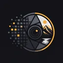

Sin documento abierto
Empieza con una imagen o continúa donde lo dejaste. Todo el procesado ocurre en tu equipo.
También puedes arrastrar una imagen o un proyecto hasta aquí.
—

RealifyeditorEmpieza con una imagen o continúa donde lo dejaste. Todo el procesado ocurre en tu equipo.
También puedes arrastrar una imagen o un proyecto hasta aquí.